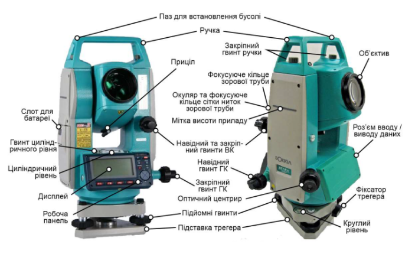
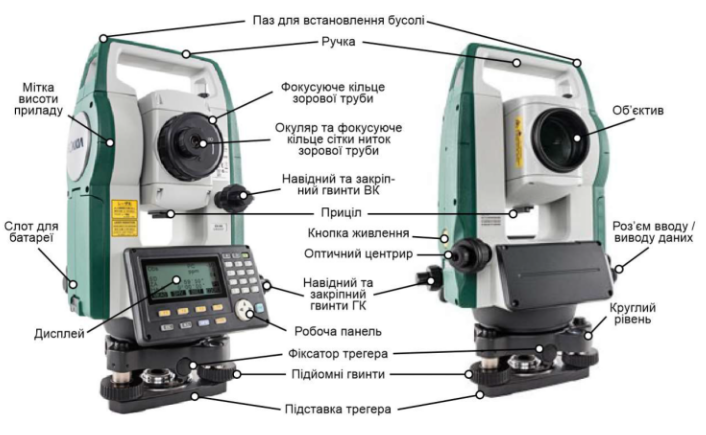

Оберіть режим тренування
На схемах показано два різні тахеометри: SOKKIA SET 630 (блакитний) та CX-55 (зелений). У кожному режимі потрібно знайти зазначену деталь, клікнувши на відповідне місце схеми.
🔷 SET 630
Тренування на схемі тахеометра SOKKIA SET 630. Знайдіть деталь кліком на схемі.
🟢 CX-55
Тренування на схемі тахеометра CX-55. Знайдіть деталь кліком на схемі.
🎲 Змішаний
Випадково з'являється схема SET 630 або CX-55. Уважно дивіться на прилад!
⏱️ На час
20 питань за 3 хвилини на обох схемах. Автоперехід після відповіді.
📋 Як тренуватися
- Оберіть режим: SET 630, CX-55, Змішаний або На час.
- Прочитайте назву деталі у верхньому блоці питання.
- Клікніть на те місце схеми, де, на вашу думку, знаходиться ця деталь.
- Система покаже, чи правильно ви вказали місце (зелена точка) чи ні (червона + правильна відповідь).
- Після завершення побачите результат та список помилок для повторення.
- Скористайтеся розділом «Довідник», щоб підготуватися.
💡 Порада: Зверніть увагу на колір приладу — SET 630 блакитний, CX-55 зелений. Це допоможе у змішаному режимі.
Мета роботи
Вивчити призначення та будову електронного тахеометра «SOKKIA SET 630». Навчитися виконувати підготовку тахеометра до роботи.
Призначення тахеометра
Тахеометри — це геодезичні прилади, призначені для вимірювання відстаней, перевищень, горизонтальних і вертикальних кутів. Поєднання цих функцій істотно прискорює процес вимірювань. Електронні тахеометри серії SET 630 мають повний комплект вбудованих програм для зйомки, запису даних і установочних параметрів.
Типи та принципи дії тахеометрів
За типом далекоміра: оптико-механічні, електронно-оптичні, електронні, реєструвальні.
За способом вимірювання відстаней: відбивні (потребують призми) та безвідбивні (більшість сучасних).
За механізмом обертання: механічні (наведення вручну) та сервопривідні (автоматичне обертання).
Лазерні далекоміри: фазові (за різницею фаз променя) та імпульсні (за часом проходження).
Точність вимірювань
- Кутові виміри: до 0,5 кутової секунди
- Лінійні виміри (відбивний): до 0,5–1 мм + 1 мм/км
- Лінійні виміри (безвідбивний): до 1 мм + 1 мм/км
- Максимальна дальність із призмою: до 5 км
- Максимальна дальність без відбивача: до 1 км
Підготовка тахеометра до роботи
- Під час зберігання зорова труба має бути вертикально (об'єктивом до трегера), з кришкою на об'єктиві.
- Встановіть штатив, надійно закріпивши ніжки.
- Встановіть прилад на штатив і закріпіть становим гвинтом.
- Дати приладу час адаптуватися до температури навколишнього середовища.
- Грубо відгоризонтуйте та відцентруйте прилад над точкою гвинтами ніжок штатива.
- Відгоризонтуйте прилад за круглим рівнем.
- Гвинтами А та В приведіть пузирчик круглого рівня перпендикулярно лінії А–В.
- Гвинтом С приведіть пузирчик у нуль-пункт (центр).
- Точне горизонтування: циліндричний рівень паралельно А–В → гвинти А та В → поворот на 90° → гвинт С → перевірка.
Фокусування та наведення на ціль
- Наведіть зорову трубу на світлу поверхню (небо або аркуш паперу).
- Фокусувальним кільцем отримайте чітке зображення сітки ниток.
- Наведіть на ціль за видошукачем.
- Сфокусуйте зображення цілі та точно наведіть на марку гвинтами ГК та ВК.
- Усуньте паралакс повторним фокусуванням.
Різниця між тахеометром і теодолітом
| Характеристика | Теодоліт | Тахеометр |
|---|---|---|
| Призначення | Вимірювання кутів | Кути, відстані, перевищення |
| Далекомір | Немає (або стадіометричний) | Вбудований електронний |
| Реєстрація | Вручну | Автоматична пам'ять |
| Обчислення | Вручну | Автоматичні |
| Продуктивність | Нижча | Вища |
📖 Довідник деталей
Вивчіть деталі обох тахеометрів перед тестом
🔷 SOKKIA SET 630 — схема

🟢 CX-55 — схема
